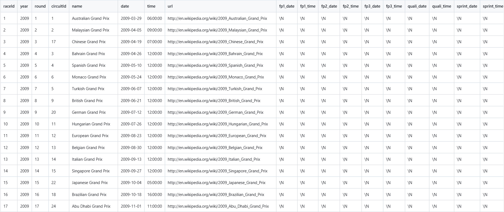

Dataset
This system utilises the dataset "Formula 1 World Championship (1950 - 2024)" by Vopani on Kaggle which is linked below. As mentioned in the title of the dataset it contains every grand prix from 1950
and forwards with data about the circuits that have been used as venues, the drivers and consturctors that have competed in the championship, and qualification and race results. All the csv files that
make up the dataset can be seen in the image on the right.
There are some drawbacks with this dataset however, for a start it does not have the qualification or race results for the second half of the 2024 season given that it hasn't been updated for six months
(as of 2025-01-15). This of course mean that the system cannot account for some of the most recent results in the championship. Furthermore, the order which the drivers and consturcotrs finished during
the qualification and race is missing from some of the races that happaned about 40 years ago. This means that these races can't be used for prediction, but a large majority of races are available and
the dataset is therefore usable.

The dataset also contains files which where unused in this project given that their data were deemed to not be important enough to make good predictions. These being for example the two diffrent standings files which only indicates how the championship standing evolved during a season, thus not being relevant when watching races in a "one-off" manner. Lap times and pitstop data was also exluded given the lack of data in them (about 300 races covered each). The seasons file was also kept unused as it only contains Wikipedia links to all 75 seasons, and the status file was exluded for a similar reason given that it only contains data to indicate why a driver did not finish a race or how many laps down they were from the lead lap. Lastly the sprint results were exluded as sprints only have been driven since 2021, thus containing a very small amount of data compared to the races.
Training & Test data
bla
Data preprocessing
As can be seen in the image of the csv files, they are rather split up and it could be more efficent to work with one large file containing data from several parts of diffrent files. To do this it was chosen to use the file races.csv as a base for a new and expanded dataset. This base file contains every grand prix that has been held and the index raceId is a value that is consistent for a given grand prix in all of the csv files which greatly helps when searching through the other files. The general structure of races.csv can be seen in the image below.

As can be seen in the image it shows the entirety of the 2009 with raceIds from 1-17, futhermore, it's apparent that a lot of the data is missing such as the time of the day when practice, qualifying, and sprint started and what date they occurred on. These colums does lack this data for a large majority of the races as previously mentioned and are therefore immedietly dropped from the dataset as those won't be used. The time of day the race was held on was also dropped as this value was unsused for this project.
With the base dataset slimmed down, additional columns with more usable values could be added. It was decided that the most interesting data would be the order of the qualification and the race result for both the drivers and constructors. To achive this both qualifying.csv and results.csv where searched through to add all drivers and constructors which partook in a grand prix weekend into four diffrent vectors for each grand prix. The base dataset now contained the additional columns driverQuali, constructorsQuali, driversPosition, and constructorsPosition.
Given that these four new columns only contained numerical vectors it was decided that they could be used to generate two cosine similarities between the qualification order and the race result which could represent how exciting a race was. The argument for this was that if a lot of changes happened during the grand prix the vectors would be less similar and thus contribute to a lower value for cosine similarity. With that the vectors in driverQuali and constructorsQuali was compared to the vectors in driversPosition and constructorsPosition respectively for each grand prix ever held. This gave the values driverCosim and constrCosim which could be added into two new separate columns in the base dataset. One important thing to note here is that there were some instances where a driver was injured during qualifying and thus couldn't partake in the race thus not beign present in the result vector. In these few cases those drivers where simply exluded from the qualifying vector to make sure that both vectors were the same length when the cosine similarity was calculated.
To have additional weights when predicting races for the users it was decided that an interesting factor could be how far each individual driver climed or fell in the order during the race. This value was stored as a tuple with the drivers
driverId (which is a unique value from drivers.csv) along with how many positions they gained or lost. All tuples for
a grand prix was saved to a vector and added to an additional column in the base dataset and with that the preprocessing was completed.
In the image on the right hand side the data for the 2003 Italian Grand Prix can be seen. As is shown, the driver with driverId 30 took pole position and the win with the constructor with constructorId 6, which according to the
files drivers.csv and constructors.csv
is the classic line up of Michael Schumacher driving for Ferrari. Along with this it can be seen in the column PodiumClimb that he indeed neither gained or lost positions when comparing his qualification to race result (it should also be noted
that this column does include all drivers and not only the podium finisher, the name is a left over from when the column only contained those three drivers). Lastly it can be seen that, given their closeness to 1, the driver and constructor cosine
similarities indicate that this might not have been the most eventful race to watch.